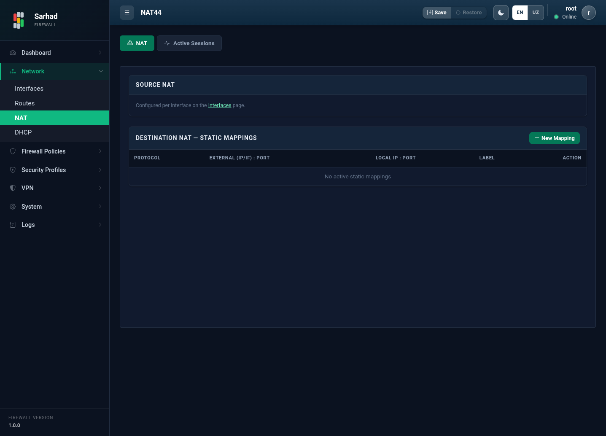

3. NAT (Manzil almashtirish)
NAT (Network Address Translation — tarmoq manzilini almashtirish) ichki
tarmoqdagi xususiy IP manzillarni tashqi (ommaviy) IP manzilga aylantirish
imkonini beradi. Bu bo’limga o’tish uchun chap menyudan Network → NAT
bo’limini tanlang (/nat).
NAT sahifasi ikkita tabdan iborat:
NAT — Source NAT holati va DNAT (port forwarding) qoidalarini sozlash.
Active Sessions — faol NAT ulanishlarini ko’rish va vaqt chegaralarini (timeouts) sozlash.
3.1. NAT turlari
Sarhad NGFW quyidagi NAT rejimlarini qo’llab-quvvatlaydi:
Source NAT (SNAT) — ichki tarmoqdan internetga chiquvchi trafikning manba (source) manzilini WAN manziliga almashtiradi. Bu eng keng tarqalgan rejim bo’lib, ichki foydalanuvchilar bitta ommaviy IP orqali internetga chiqadi.
Destination NAT (DNAT) — tashqaridan kelgan trafikni ichki serverga yo’naltiradi (port forwarding). Masalan, WAN’ning 443-portiga kelgan trafik ichki veb-serverga uzatiladi.
3.2. Interfeys rollari avtomatik aniqlanadi
NAT interfeys rollari (ichki/tashqi) qo’lda tanlanmaydi — ular har bir interfeysga berilgan zona asosida avtomatik belgilanadi:
WAN zonasi → tashqi (outside) interfeys.
LAN yoki DMZ zonasi → ichki (inside) interfeys.
Shu sababli NAT’ni ishlatish uchun avval interfeyslarga to’g’ri zonani bering (qarang: Tarmoq interfeyslarini sozlash va boshqarish). Zona o’zgartirilsa, NAT rollari ham avtomatik yangilanadi.
3.3. NAT tabi (Source NAT va DNAT)
{kind=link}

Source NAT bo’limida tizim ichki (LAN/DMZ) va tashqi (WAN) interfeyslarni hamda manzillar ro’yxatini (address pool) zonalar asosida avtomatik ko’rsatadi.
Static Mappings (DNAT / port forwarding) bo’limida tashqaridan ichki serverga kirishni ochuvchi qoidalar yaratiladi:
New Mapping tugmasini bosing.
Quyidagilarni kiriting:
Protocol — TCP, UDP, ICMP yoki “barchasi” (any).
Label — qoidaning tushunarli nomi (masalan,
Veb-server).External IP / External Port — tashqi (WAN) manzil va port (masalan,
203.0.113.5:443).Local IP / Local Port — paket yo’naltiriladigan ichki server manzili va porti (masalan,
192.168.10.20:443).
Saqlash (Save) tugmasini bosing.
Qoida darhol kuchga kiradi va ro’yxatda paydo bo’ladi.
3.4. Active Sessions tabi

Bu tabda NAT trafigini kuzatish va vaqt chegaralarini sozlash mumkin.
3.4.1. Vaqt chegaralari (Session timeouts)
Sessiyaning bo’sh turish vaqti (sekundlarda) protokol turi bo’yicha sozlanadi:
UDP — UDP sessiyalari uchun.
TCP established — o’rnatilgan TCP ulanishlari uchun.
TCP transitory — o’rnatilayotgan (yarim ochiq) TCP ulanishlari uchun.
ICMP — ICMP (ping) trafigi uchun.
Qiymatlarni kiritib, Save timeouts tugmasini bosing.
3.4.2. Faol sessiyalar (Active NAT sessions)
Ayni paytda faol bo’lgan barcha NAT ulanishlari jadvalda ko’rsatiladi: protokol, ichki (Inside/Local) va tashqi (Outside/NAT) manzillar. Sessiyalarni IP bo’yicha qidirish, shuningdek alohida yoki barcha sessiyalarni tozalash (Clear all) mumkin.
Bundan tashqari, User traffic summary jadvalida har bir ichki IP bo’yicha sessiyalar soni, paketlar va umumiy trafik hajmi ko’rsatiladi.
Note
NAT qoidalari firewall qoidalari bilan birga ishlaydi. DNAT qoidasi trafikni ichki serverga yo’naltirsa ham, trafik o’tishi uchun firewall’da mos ruxsat qoidasi ham bo’lishi shart (qarang: Firewall qoidalari (Firewall Policies / ACL)).